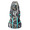
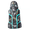
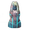

灰烬城堡
本站支持中英文站内搜索。带 ↗ 的链接指向外部网站；各页来源版本见页脚。

灰烬亡灵堡垒是灰烬之地中的地点，有直冲天空的绿光标记，远处可见。
位置
每个世界有20座焦黑堡垒，始终远离海岸，位于内陆熔岩区之间，通常在灰烬之地中央岛屿内部。
布局
堡垒有高大的矩形外墙、许多柱子及青铜尖刺防御。两面相对外墙各有关闭的大门，通向内部。
内部地面散布墓碑，角落有两个恶意雕像，两条石坡道通向外墙顶部城垛。
中央有高塔，顶部同样布满尖刺，只有一扇门通向内部。
外墙、内塔墙壁、柱子、门和尖刺均可摧毁，但仅承受工具等级为5或更高的镐击伤害，即攻城锤或配有爆炸弹药的投石机。柱子生命值仅1，但墙壁1500、尖刺1500，尤其门6000，高得多。外墙厚三层，内塔墙仅一层。
堡垒初始会生成以下生物，独立于恶意雕像，击杀后不重生：
战利品
中央塔楼内可找到：
堡垒内部其他位置：
- 内庭最多有8个熔岩之核，每个出现概率5%。
- 塔楼实心墙旁最多生成3个焦黑宝箱，从塔入口顺时针依次出现概率为100%、13%和50%。
 邪影弩炮掉落焦黑齿轮，可用于制作投石机。
邪影弩炮掉落焦黑齿轮，可用于制作投石机。- 青铜尖刺条破坏后，每条掉落2-5份青铜废料。每座堡垒恰有78条尖刺，因此平均产出273份青铜废料。
焦黑宝箱内含：
| 数额 | 物品 | 机率( 百分比)宝箱 |
|---|---|---|
| 10-20 | 74.7% | |
| 200-500 | 74.7% | |
| 1-2 | 74.7% | |
| 5-10 | 74.7% | |
| 1-2 | 49.6% | |
| 1 | 49.6% | |
| 1 | 49.6% | |
| 1 | 49.6% | |
| 1 |  黑色大理石防护神像 |
23.2% |
| 1 | 12.2% | |
| 1 |  黑色大理石战斗神像 |
12.2% |
| 1 |  焰金属防护神像 |
2.53% |
| 1 | 焰金属战斗神像 | 2.53% |
说明
- 外墙为3层x1500生命值=4500总生命值，比6000生命值的大门容易突破。塔墙仅1500生命值，更容易，但要小心别误毁下述战利品。
- 焦黑宝箱和古钟碎片祭坛可破坏。宝箱具有200生命值，抗多数伤害，闪电、毒素和灵魂除外；祭坛极其脆弱，仅10生命值，没有抗性。
- 古钟碎片祭坛会产生一道巨大的竖直光柱，远处也能看见。可借此从远处辨认完好堡垒的位置。
- 摧毁祭坛也会移除信标。
- 东侧和西侧较小岛屿通常没有堡垒，因此最好先在出生点正南方登陆。
- 部分墙段可用任意镐开采，可能是游戏问题。
提示
- 简单策略是先攻下第一座堡垒，获得血石，制作巨魔之杖。之后可在其他堡垒外召唤召唤巨魔，让其轻松清理。最后杀死巨魔，收取战利品！
- 搭木梯登墙，比用攻城锤破门或墙更容易。世界生成合适时，也可借天然巨岩进入。登上后绕墙奔跑，逐渐击杀敌人、摧毁生物生成点。被围攻便跳到外侧，但小心熔岩。
- 可在堡垒外用弓弩或魔法摧毁邪影弩炮，站得足够高时也能摧毁生物生成点。
- 若进入时未破坏墙门，攻下后便是理想小基地，墙壁坚不可摧。仅飞行的女武神和灰烬之鹫能进入。
- 不用攻城锤进入中央塔有两种方法：用镐挖坑，从塔墙下穿过，但达到地形最低限时可能无效；或登上塔顶，从尖刺间空隙进入。后一种要离开时，需传送出去，或搭梯子、平台再次穿过尖刺空隙。
图片库
- 焦黑堡垒塔内部，前方有两个熔岩之核，后方是古钟碎片祭坛和焦黑宝箱。若有指路符文石，会位于左后方。
-
堡垒内部
-
堡垒顶部的术士
-
焦黑宝箱
- 指示焦黑堡垒位置的显眼绿光。


| 生物群系 | |||||||||||||||||||
|---|---|---|---|---|---|---|---|---|---|---|---|---|---|---|---|---|---|---|---|
| 重要 地点 |
| ||||||||||||||||||
| 资源 采集点 |
| ||||||||||||||||||
1500 (walls)
1500 (spikes)
6000 (gates)
Charred Fortresses are Points of interest in Ashlands. They are marked by a beam of green light shooting straight up into the sky, visible from a distance.
Location
Each world has 20 Charred Fortresses. They are always located away from the coasts between the inland lava fields, usually inside the central islands of the Ashlands.
Layout
The fortress consists of a tall, rectangular outer wall with many pillars and spiked bronze defenses. Two opposing outer walls have closed gates in them, leading to the interior area.
The interior contains an expanse of ground littered with gravestones, with two Effigies of Malice in the corners and two stone ramps leading up to the parapets atop the exterior walls.
In the very center of the fortress interior is a tall tower, capped with more spiked defenses, which has one gate leading inside.
The walls (of the exterior and of the interior tower), the pillars, gates and spiked defenses can all be destroyed, but only by Pickaxe damage of tool tier 5 or higher - i.e. a Battering Ram or a Catapult with Explosive Payloads. The pillars have negligible (1) health but the walls (1500), spikes (1500) and especially the gates (6000) have much higher health. The exterior walls are three layers thick, whereas the interior tower walls are only one layer thick.
The fortress initially spawns some creatures, independently to the Effigies of Malice, they do not respawn if killed:
- Up to 3 Charred Warlocks (100% chance for the one on top of the tower and 60% chance to spawn for the other).
- Up to 5 Charred Marksmen (100% chance for the one on top of the tower and 60% chance to spawn for the other).
- Up to 4 Skuggs (80% chance for each corner of the fortress to have one).
Loot
Inside the central tower can be found:
- A Bell Altar, drops 2 to 4
 Bell Fragments when destroyed.
Bell Fragments when destroyed. - A Charred chest.
- A Fader Vegvisir with a 50% chance to spawn.
- 2 Molten Cores.
Other places inside the Fortress:
- The interior court can have up to 8 Molten Cores, with a 5% chance each to spawn.
- Up to 3 Charred chests can spawn along the solid walls of the tower (clockwise from the tower entrance: 100%, 13% and 50% chances to spawn).
- Skugg drop Charred Cogwheels which allow the player to make a Catapult.
- The bronze spike strips can be destroyed to drop 2-5 Scrap Bronze each. As each Charred Fortress contains exactly 78 spike strips, one fortress will yield an average of 273 scrap bronze.
The content of Charred Chests is:
| Amount | Item | Chance per chest |
|---|---|---|
| 10-20 | 74.7% | |
| 200-500 | 74.7% | |
| 1-2 | 74.7% | |
| 5-10 | 74.7% | |
| 1-2 | 49.6% | |
| 1 | 49.6% | |
| 1 | 49.6% | |
| 1 | 49.6% | |
| 1 | Black Marble Protection Idol | 23.2% |
| 1 | 12.2% | |
| 1 | Black Marble Battle Idol | 12.2% |
| 1 | Flametal Protection Idol | 2.53% |
| 1 | Flametal Battle Idol | 2.53% |
Notes
- The exterior walls (3 layers x 1500 health = 4500 total) are easier to break through than the gates (6000 health). The tower walls (1500 health) are easier still, but be careful not to accidentally destroy any loot (see below).
- The Charred chests and the Bell fragment altar are destroyable; while the chests have 200 health and are resistant to most types of damage (except for Lightning, Poison and Spirit), the altar is extremely fragile - having only 10 health and no damage resistances.
- The presence of the Bell fragment altar is indicated by a huge vertical beacon of light, which can be seen at a distance. This beacon can help identify the location of intact fortresses from afar.
- Destroying the altar also removes the beacon.
- The eastern and western smaller islands usually generate with no fortress, thus it is best to first land directly south of spawn.
- Some segments of the walls can be mined with any pickaxe. This might be due to a bug.
Tips
- A simple strategy to conquer Charred Fortresses is to first master one Charred Fortress, obtain a Bloodstone, and then craft the Trollstav. Now, the player can easily approach a Charred Fortress and summon Summoned Trolls from the outside, which will handle the fortress without any issues. Finally, kill the Troll and enjoy the loot!
- It is easier to build a wooden ladder to get on top of the wall rather than using a Battering Ram to destroy the gates/walls. And, if you are lucky with the world generation, you could use one of the naturally spawning giant rocks to get inside too. Once on top of the walls, simply run circles in the walls and slowly kill enemies and destroy the spawners, if you get overwhelmed just jump off outside (be careful if there is lava).
- You can destroy the skuggs from outside the fortress with the bow/crossbow or magic, and from a high enough place you can also destroy the spawners too.
- If you conquered the fortress and didn´t destroy the walls/gates to get inside, the fortress is now a perfect place to build a mini base, thanks to the indestructible walls. Only the flying valkyries and Voltures can get inside.
- There are two ways to get inside the central tower without a Battering Ram. First is to make a hole on the ground with a pickaxe and simply pass below the wall of the tower (this may not work if you hit the limit on how low the ground can go). Second is to get on top of the tower and get inside through the hole between the spikes, to get out you will need to either portal out or build yourself ladders/platforms to pass through the hole between the spikes again.
Gallery
-
The inside of a Charred Fortress tower. At front are two Molten cores; at back are the Bell fragment altar and a Charred chest. The Vegvisir would be at the back left, if it were present.
-
Inside of Fortress
-
Warlock in the top of Fortress
-
Charred chest
-
Telltale green light showing the location of a Charred Fortress.
| Biomes | Meadows • Black Forest • Ocean • Swamp • Mountain • Plains • Mistlands • Ashlands • Deep North • World Edge | ||||||||||||||||||
|---|---|---|---|---|---|---|---|---|---|---|---|---|---|---|---|---|---|---|---|
| Points of interest |
| ||||||||||||||||||
| Resource nodes |
| ||||||||||||||||||